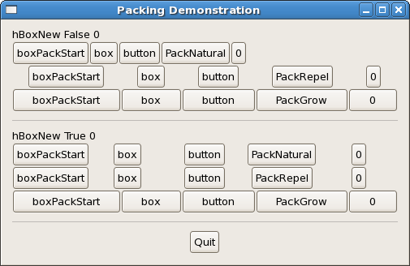

|
Gtk2HsTutorial |
||
|---|---|---|
|
Packing Demonstration |
||
The base of all widgets here is a vertical box, which itself is a child of the window. The child widgets are not displayed homogeneously and there is no additional spacing (other than the standard spacing). There are 6 horizontal boxes in the vertical box, as defined by the function makeBox, which has the type as shown. Furthermore, there are 2 labels in the vertical box as well as 2 horizontal separators. The last widget is the quit button, whose onClicked signal is attached to the mainQuit function.
The separators are created with hSeparatorNew and they are spaced by boxPackStart with a padding of 10 pixels. The labels are created by labelNew which takes a Maybe String and their positioning is set by miscSetAlignment to be left and top justified.

The function makeBox :: Bool -> Int -> Packing -> Int -> IO HBox demonstrates how Gtk2Hs widgets fit into the Haskell type system. Packing is just a type like Int and Bool and IO HBox is just like IO String in the usual IO. The function creates 5 buttons, labels them with the appropriate text and packs them into a horizontal box. The function is then used in the main program to create the desired ways of packing.
import Graphics.UI.Gtk
main :: IO ()
main = do
initGUI
window <- windowNew
vbox <- vBoxNew False 0
set window [containerBorderWidth := 10,
windowTitle := "Packing Demonstration",
containerChild := vbox ]
label1 <- labelNew (Just "hBoxNew False 0")
miscSetAlignment label1 0 0
boxPackStart vbox label1 PackNatural 0
box1 <- makeBox False 0 PackNatural 0
boxPackStart vbox box1 PackNatural 0
box2 <- makeBox False 0 PackRepel 0
boxPackStart vbox box2 PackNatural 0
box3 <- makeBox False 0 PackGrow 0
boxPackStart vbox box3 PackNatural 0
sep1 <- hSeparatorNew
boxPackStart vbox sep1 PackNatural 10
label2 <- labelNew (Just "hBoxNew True 0")
miscSetAlignment label2 0 0
boxPackStart vbox label2 PackNatural 0
box4 <- makeBox True 0 PackNatural 0
boxPackStart vbox box4 PackNatural 0
box5 <- makeBox True 0 PackRepel 0
boxPackStart vbox box5 PackNatural 0
box6 <- makeBox False 0 PackGrow 0
boxPackStart vbox box6 PackNatural 0
sep <- hSeparatorNew
boxPackStart vbox sep PackNatural 10
quitbox <- hBoxNew False 0
boxPackStart vbox quitbox PackNatural 0
quitbutton <- buttonNewWithLabel "Quit"
boxPackStart quitbox quitbutton PackRepel 0
onClicked quitbutton mainQuit
onDestroy window mainQuit
widgetShowAll window
mainGUI
makeBox :: Bool -> Int -> Packing -> Int -> IO HBox
makeBox homogeneous spacing packing padding = do
box <- hBoxNew homogeneous spacing
button1 <- buttonNewWithLabel "boxPackStart"
boxPackStart box button1 packing padding
button2 <- buttonNewWithLabel "box"
boxPackStart box button2 packing padding
button3 <- buttonNewWithLabel "button"
boxPackStart box button3 packing padding
button4 <- case packing of
PackNatural -> buttonNewWithLabel "PackNatural"
PackRepel -> buttonNewWithLabel "PackRepel"
PackGrow -> buttonNewWithLabel "PackGrow"
boxPackStart box button4 packing padding
button5 <- buttonNewWithLabel (show padding)
boxPackStart box button5 packing padding
return box
|
The image below shows the effects of resizing the window horizontally. In the first group, with homogeneous False horizontal resizing leaves the first row of buttons as it is, spaces the second row evenly, and enlarges the buttons in the third row. In the second group the buttons are set to be packed homogeneously, and the first 2 rows will look the same. Resizing the window vertically just add extra space at the end, because the vertical box was initialized with False.

|
Packing Widgets |
Packing Using Tables |